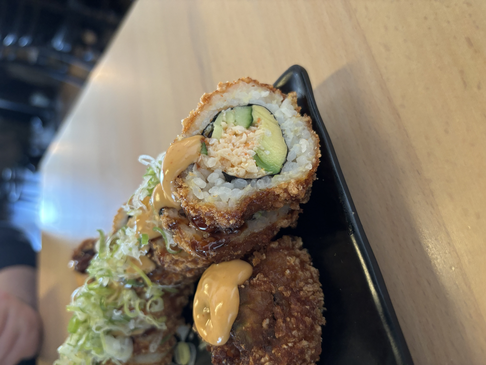
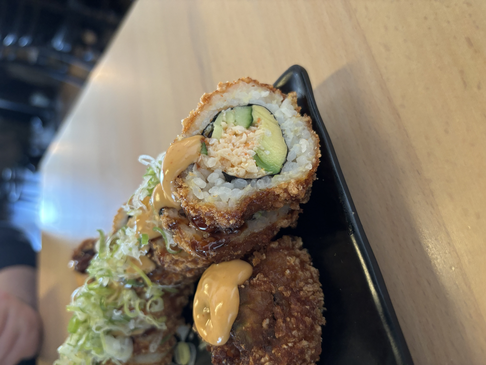
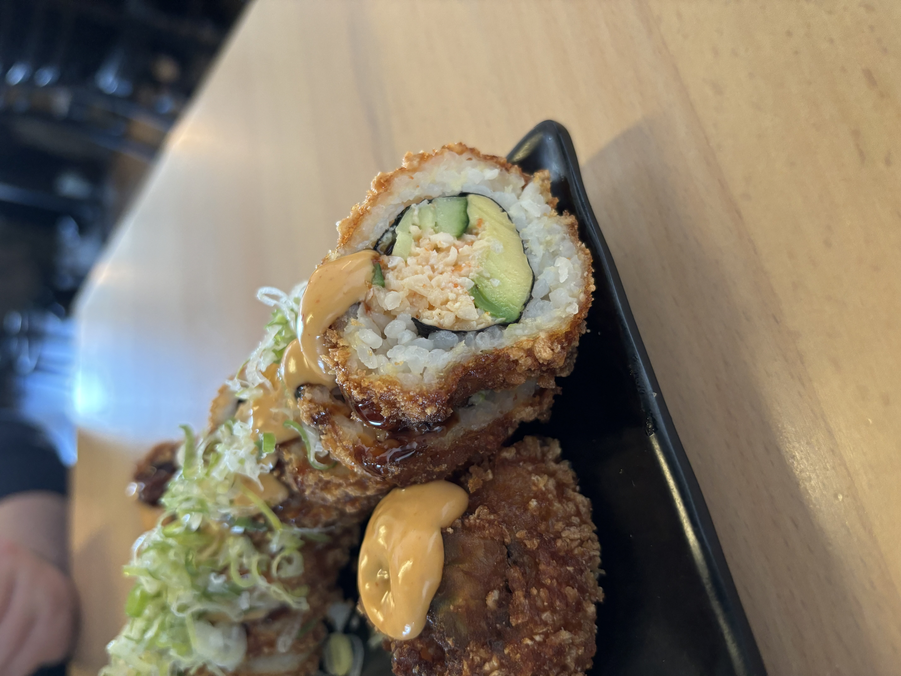

One thing about me is that I am celiac and vegan! Since moving to SoCal, I have been on a quest to discover the finest vegan eateries, sampling everything from pastries and burgers to sushi. "Just What I Kneaded," a charming vegan bakery in Frogtown, has won me over with its unparalleled vegan (and gluten-free) biscuits and gravy. Another gem I've found is Kenshō, a vegan sushi restaurant nestled in Westminster. Their "I Lava You" dish is a personal favorite and a must-try for anyone exploring the area's vegan cuisine!

As a matcha lover, I've discovered that this vibrant green tea is much more than just a beverage—it's a delightful journey into a world of rich flavors and profound health benefits. One of the reasons I'm drawn to matcha is its versatility. Whether it's a morning latte to kickstart the day or a soothing afternoon drink, matcha is my go-to beverage because it seamlessly adapts to any moment. A huge plus is that matcha supports overall health, from boosting metabolism and aiding in weight management to enhancing focus and concentration. For those who do not enjoy coffee, it is an ideal choice for those seeking a more balanced and mindful approach to their energy levels. Some shops in SoCal that serve my favorite matcha fix are Contra Coffee and Tea, Forum coffee (be sure to ask for alternative milk if you're lactose or vegan!), and Reborn Coffee!